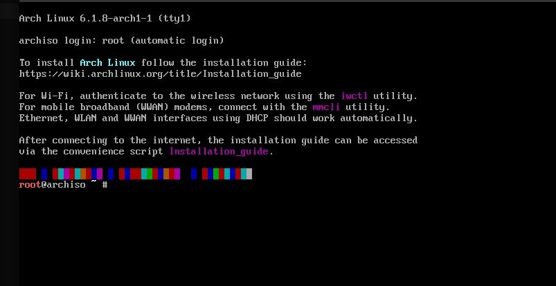
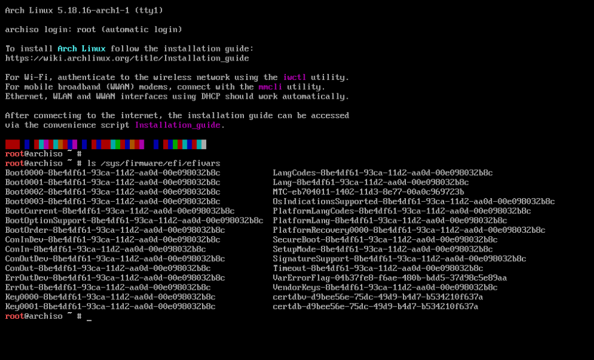
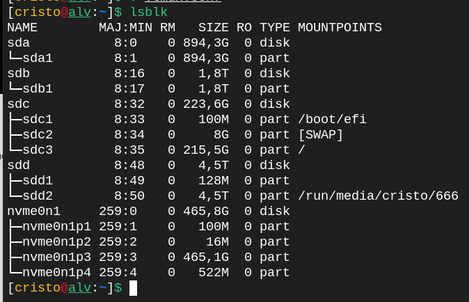

Instalar Archlinux - EXT4
Una distribución de Linux® liviana y flexible que intenta mantenerlo simple. Actualmente tenemos paquetes oficiales optimizados para la arquitectura
x86-64 - 64bits
Contamos con Paquetes Oficiales con un gestor de paquetes Pacman es una
de las principales características distintivas de Arch Linux y un repositorio de
paquetes no-oficiales (AUR) - Arch User Repository operado por la comunidad
que crece en tamaño y calidad todos los días.
● Descarga y Crear USB Booteable
En esta guía estaremos conociendo de manera muy detallada, el proceso de instalación de la distribución GNU/Linux de liberación continua, Archlinux.
Iniciamos el liveCD en modo ROOT (Admintrador) para empezar a descargar los programas necesarios que vamos a usar y realizar configuraciones básicas

Configuración de teclado
Establecer distribución del teclado temporal para que reconozca todos los caracteres
Ponemos nuestro teclado para Español
root@archiso ~ # loadkeys es
Ponemos nuestro teclado para LatinoAmerica
root@archiso ~ # loadkeys la-latin1
Ponemos nuestro teclado para Americano
root@archiso ~ # loadkeys us
1. Comprueba si tu PC inicia con UEFI o BIOS Legacy:
UEFI y BIOS Legacy son dos tipos de firmware que se utilizan para iniciar y configurar el hardware de una computadora antes de que el sistema operativo se cargue.
Compruebe el tipo de arranque, ejecutando este comando para ver una lista con ls
root@archiso ~ # ls /sys/firmware/efi/efivars
Si hay archivos en efivars significa que tu sistema es UEFI/EFI
● Instalación de Arch en UEFI/EFI
2. Resultado si es BIOS/Legacy :
Si NO existen archivos en efivars significa que tu sistema es BIOS/Legacy
● Instalación de Arch en BIOS/Legacy

● Más Información de UEFI o BIOS/Legacy
DISCO DURO
Hay que aprender a identificar como es la ruta de nuestros discos luego saber cuales son particiones.
Ruta de disco pueden ser:
/dev/sda (Discos sdd o hdd)/dev/sdb (Discos sdd o hdd)/dev/sdc (Así cambia de letra...)/dev/nvme0n1 (Discos nvme)/dev/mmcblk0 (SD Card)PARTICIONES
Pueden ser:
/dev/sda1
/dev/sda2
/dev/sda3
/dev/nvme0n1p1
/dev/nvme0n1p2
/dev/nvme0n1p3
/dev/mmcblk0p1
/dev/mmcblk0p2
/dev/mmcblk0p3Para revisar nuestros discos y particiones con :
root@archiso ~ # lsblk
Aquí podemos revisar que tenemos 4 discos y un disco Nvme.
Dato: Arch Linux incluye las siguientes herramientas de particionado:

● cfdisk es para crear y modificar particiones facilmente ● Fuente: https://wiki.archlinux.org/index.php/Partitioning
Estructura de ficheros en Linux

Debemos saber que de root [ / ] nacen las demás carpetas
La ventaja que Linux permite asignarle una partición para cada carpeta
Podemos tener /boot/ en una partición
Podemos tener /home/ en otra partición
/home/ la carpeta HOME guarda los archivos de todos los usuarios algo parecido a un DISCO D: de windows
Todo depende si queremos tenerlo separado en otra partición
Ejemplos de particionados en UEFI - GPT
>> Ejemplo 1 de particionado en GPT
/dev/sda1 EFI SYSTEM en FAT32 /dev/sda2 ROOT - HOME - ETC...
>> Ejemplo 2 de particionado en GPT
/dev/sda1 EFI SYSTEM en FAT32 /dev/sda2 ROOT - HOME - ETC... /dev/sda3 [SWAP]
>> Ejemplo 3 de particionado en GPT
/dev/sda1 EFI SYSTEM /dev/sda2 ROOT /dev/sda3 [SWAP] /dev/sda4 HOME
>> La documentación oficial nos recomienda usar en GPT la siguiente estructura

Ejemplos de particionados en BIOS/LEGACY - MBR
>> Ejemplo 1 de particionado en MBR
/dev/sda1 BOOT - ROOT - HOME - ETC...)
>> Ejemplo 2 de particionado en MBR
/dev/sda1 BOOT /dev/sda2 ROOT - HOME - ETC... /dev/sda3 [SWAP]
>> Ejemplo 3 de particionado en MBR
/dev/sda1 BOOT /dev/sda2 ROOT /dev/sda3 [SWAP] /dev/sda4 HOME
>> Ejemplo 4 de particionado en MBR
/dev/sda1 BOOT /dev/sda2 ROOT /dev/sda3 [SWAP] /dev/sda4 HOME /dev/sda5 Extendida (esta no se monta solo es la conexión) /dev/sda6 Extendida /dev/sda7 Extendida
>> La documentación oficial nos recomienda usar en MBR la siguiente estructura <<

Memoria SWAP
● Menos de 1GB RAM física = 2GB de SWAP ● Entre 2GB a 4GB RAM física = 2GB a 4GB de SWAP ● 8GB de RAM física = 4GB de SWAP ● Más de 8GB de RAM física = 2GB a 4GB de SWAP

>> Pero si necesitan hibernación 8Gb serán suficientes <<